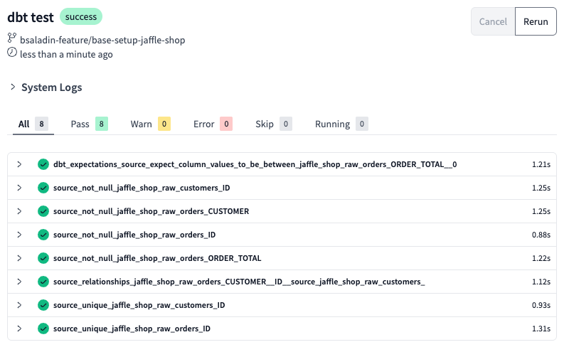

Data Quality Testing in dbt
Introduction
Ensuring data integrity is critical for reliable analytics. dbt allows automated data testing to catch inconsistencies before they impact downstream reports. By implementing column-level tests, we can enforce business rules and improve trust in our data models.
dbt provides built-in test types and supports custom tests through packages like dbt-utils and dbt-expectations.
1. Defining Data Quality Tests
In dbt, tests are defined within the .yml files alongside the models (preferred) or schemas they validate.
Example: Basic Tests on the stg_orders Model in the staging schema
| ./models/staging/staging.yml | |
|---|---|
Test Types
- unique: Ensures that order_id does not contain duplicates
- not_null: Ensures order_total and order_id have no missing values
- accepted_range: Ensures order_total is always ≥ 0 (i.e., no negative totals)
2. Add dbt-expectations for advanced testing
Add package dbt-expectations to your packages.yml file
| ./packages.yml | |
|---|---|
Run dbt deps to install the package
See all the tests available in the dbt-expectations package here.
3. Add data quality tests
Add data quality tests to your dbt project in the source.yml file
4. Running Tests
Running dbt tests is as simple as adding the below code to the command line and run it with Cmd + Enter on Mac or Ctrl + Enter in Windows. Execute the command below:
This command will:
- Validate all tests in the project.
- Identify any failing records.
- Provide a summary of passed/failed tests.
Example output:
| Timestamp | Status |
|---|---|
| 16:12:45 | 1 of 3 PASS unique test on stg_orders.order_id |
| 16:12:45 | 2 of 3 PASS not_null test on stg_orders.order_total |
| 16:12:45 | 3 of 3 FAIL accepted_range test on stg_orders.order_total |
❌ A failure on accepted_range means there are negative order totals that need fixing.
In our case, you should see the following results:

Great! All tests passed!🎉
Commit the changes to your repository. Add a commit message Add data quality tests.
Merge the branch into main.
5. Advanced Granular Test Configuration
dbt allows defining granular conditions within test configurations. This ensures flexibility and targeted validation for business rules. If you like, you can also add this logic in your code in a new file ./marts/staging/staging.yml.
Example: Conditional Severity for order_total
| Granular Testing | |
|---|---|
Dynamic thresholds:
- error_if: ">50" → Fails if order_total exceeds 50
- warn_if: ">0" → Raises a warning if order_total is greater than 0
- where: "status IN ('completed', 'shipped')" → Applies only to completed & shipped orders
6. Tip for Handling Test Failures
When a test fails, dbt provides detailed logs with failing records. You can let dbt add this information into snowflake to identify failed records. More information here.
This helps teams quickly identify, debug, and fix data issues.
🎉 Next Steps
By integrating dbt’s testing capabilities, we can automate data validation and prevent bad data from entering downstream reports.
🔗 Continue to: 🔗 Continue to: dbt Documentation & Deployment